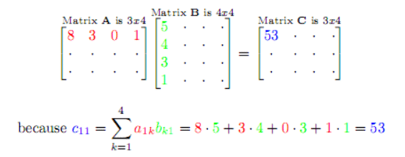

Git Repo Link
Git Repo LinkBefore we start
 Let’s check how does matrix dot product work.
We are going to use vectorized computation. Understanding matrix dot product is really important!
I found a good website for visualizing matrix dot product! Matrix Multiplication
I won’t talk about “What is Linear Regression” much since there are a lot of good tutorials out there
I highly recommend Stanford ML course
Ready to code? Let’s begin
Like always, load up all libraries we need first
# Importing libraries we need
%matplotlib inline
#from __future__ import print_function
import numpy as np
import pandas as pd
import matplotlib.pyplot as plt
Create Linear Regression Model Class.
To make it look cool, I am going to build a “Class” of Linear Regression Model,
so we can use our code like we do with tensorflow/scikit-learn library 🙂
class LinearRegression(object):
def __init__(self):
self.m = None
self.b = None
self.loss_history = []
def predict(self, X):
y_pred = np.zeros(X.shape[0])
y_pred = np.dot(X, self.m) + self.b
return y_pred
# Calculate 'y_predict' value using matrix multiplcation
def loss(self, X, y):
y_pred = self.predict(X)
loss = sum(y - y_pred)/len(y)
return loss
# loss = Average of errors (y - y-prediction)
def gradient(self, X, y):
y_pred = self.predict(X)
b_grad = sum((y_pred - y)) / len(y)
m_grad = np.dot(X.T, (y_pred - y)) / len(y)
return b_grad, m_grad
# This part can be bit tricky
# b_grad :derivative of bias(y-intercept)
# m_grad : derivative of weight
def train(self, X, y, learning_rate=1e-3, num_iters=100, verbose=False):
# set a default value of learning rate, and number of iteration
[num_train, dim] = X.shape
if self.m is None:
self.m = 0.001 * np.random.randn(dim, 1)
if self.b is None:
self.b = 0.001 * np.random.randn(1)
for it in range(num_iters):
# store the loss for each iteration for plot
this_loss = self.loss(X, y)
self.loss_history.append(this_loss)
# calculates gradient and updates
[b_gred, m_gred] = self.gradient(X, y)
# update weights
self.b -= learning_rate * b_gred
self.m -= learning_rate * m_gred
if verbose and it % 10 ==0:
print('iteration %d / %d: loss %f' %(it, num_iters, this_loss))
Let’s check if our code works with sample data.
Before you test the code with real data, it is a good idea to test it with small/simple data
# We are expecting the result model with similar weight & bias with this
m = 2.5
b = 5
X = np.arange(30).reshape(30,1)
error = np.random.uniform(-30, 30, size=30).reshape(30,1)
y = (np.dot(m,X) + b) + error
Create Linear Regression model, and train model with data set.
model = LinearRegression()
model.train(X, y, num_iters= 100, verbose=True)
Result will be...
iteration 0 / 100: loss 37.954977
iteration 10 / 100: loss 2.723276
.
.
iteration 80 / 100: loss 1.438623
iteration 90 / 100: loss 1.434857
Check the result!
plt.plot(model.loss_history)
plt.xlabel('Iteration', fontsize=12)
plt.ylabel('Error', fontsize=12)
# Let's plot our prediction line
y_pred = np.dot(X, model.m) + model.b
plt.plot(X, y_pred, color='red', label='predict')
plt.scatter(X, y, label='Y')
plt.legend()
plt.show()
I hope you liked this post. It is true you can build a model faster and easier with library(tensorflow, scikit-learn ..)
But coding up the machine learning algorithm from scratch will give you deeper understanding of it!
I will post about Neural Network next !